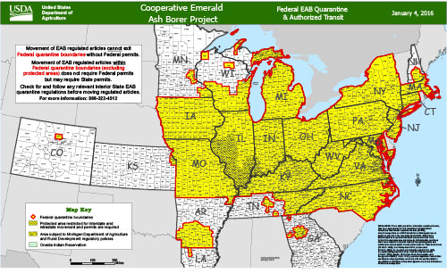

Agrilus planipennis, commonly known as the emerald ash borer, is a green buprestid or jewel beetle native to northeastern Asia that feeds on ash species.
In its native range, it is typically found at low densities and does not cause significant damage to trees native to the area.
Outside its native range, it is an invasive species and is highly destructive to ash trees native to northwest Europe and North America.
Shared a plan that made sense after diagnosing your specific needs.
Emerald ash borer threatens the entire North American Fraxinus genus. It has killed at least tens of millions of ash trees so far and threatens to kill most of the 8.7 billion ash trees throughout North America
Local governments in North America are attempting to control it by monitoring its spread, diversifying tree species, insecticides, and biological control.
Damage and efforts to control the spread of emerald ash borer have affected businesses that sell ash trees or wood products, property owners, and local or state governments.
Costs for managing these trees can fall upon homeowners or local municipalities. For municipalities, removing large numbers of dead or infested trees at once is costly, so slowing down the rate at which trees die through removing known infested trees and treating trees with insecticides can allow local governments more time to plan, remove, and replace trees that would eventually die. This strategy saves money as it would cost $10.7 billion in urban areas of 25 states between 2009–2019, while removing and replacing all ash trees in these same areas at once would cost $25 billion.
In areas where emerald ash borer has not yet been detected, surveys are used to monitor for new infestations. Visual surveys are used to find ash trees displaying emerald ash borer damage, and traps with colors attractive to emerald ash borer, such as purple or green, are hung in trees as part of a monitoring program. These traps can also have volatile pheromones applied to them that attract primarily males.[